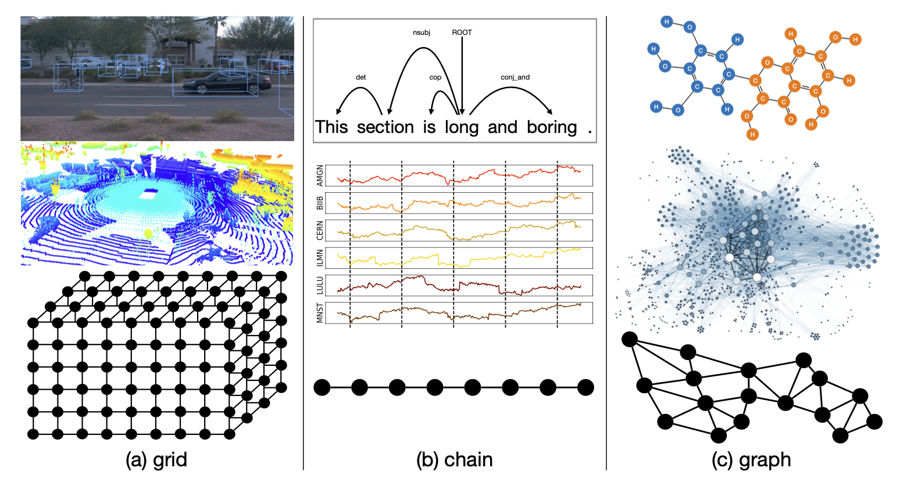
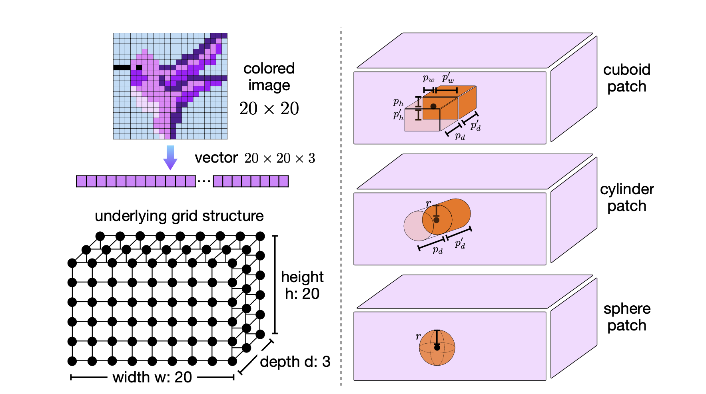

Tutorial on Structural Interdependence Function
(Released: December 8, 2024; Latest Revision: December 10, 2024.)
In this tutorial, you will learn
- what is structural interdependence function,
- how to model structural interdependence in
tinybig, - how to calculate structural interdependence matrices,
- how to use the function to process image data.
Many materials used in this tutorial are prepared based on the Section 5.2 of [2], and readers are also recommended to
refer to that section of the paper for more detailed technical descriptions when you are working on this tutorial.
References:
[2] Jiawei Zhang. RPN 2: On Interdependence Function Learning Towards Unifying and Advancing CNN, RNN, GNN, and Transformer. ArXiv abs/2411.11162 (2024).
1. What is Structural Interdependence?

As the carrier of information, the data collected in different modalities usually have different underlying structures. The above figure illustrates examples of real-world data and their corresponding topological structures. Images and point clouds can be represented as grids in 2D and 3D space; language and time series data exhibit chain structures with sequential connections; and molecule compounds and social networks can be represented as graphs.
These diverse data types demonstrate various structural interdependence relationships among instances and attributes in terms of spatial distributions, sequential orders, and extensive interconnections, respectively. It also motivates us to propose the structural interdependence function to be introduced below.
2. How to Model Structural Interdependence?
We propose to model the data structural interdependence relationships with the computational geometry and topology. Computational geometry and topology are fields within computer science that focus on the study of algorithms expressible in terms of data geometry and topology structures. Both computational geometry and topology play fundamental roles in numerous areas of computer science and machine learning, with their algorithms being crucial for processing, analyzing, and interpreting data in geometric and topological forms.
Formally, given the input data batch \(\mathbf{X} \in {R}^{b \times m}\) (with \(b\) instances and each instance with \(m\) attributes), based on the underlying data topological/geometric structures, we compute the interdependence matrices modeling the interdependence relationships among instances and attributes in the data batch as follows:
\[\begin{equation}
\xi_a(\mathbf{X}) = \mathbf{A}_a \in {R}^{m \times m'} \text{, and }
\xi_i(\mathbf{X}) = \mathbf{A}_i \in {R}^{b \times b'},
\end{equation}\]
where \(\mathbf{A}_a\) and \(\mathbf{A}_i\) can capture the interdependence relationships among the attributes and instances, respectively.
3. Examples of Structural Interdependence Functions.
In the following figure (functions 9-11), we illustrate some example of the structural interdependence functions based on
the grid, chain and graph structures.
In the following parts of this tutorial, we will walk you through some of them to
help you get familiar with these functions implemented in the tinybig library.

4. Geometric Grid based Structural Interdependence Function.
In this part, we will introduce the structural interdependence functions based on geometric patches present in input data batches with grid structures. These geometric patch-based data structural interdependence functions are primarily applied to model the interdependence relationships among attributes, such as pixels and voxels in images and point clouds. Additionally, in practical applications, they can also be utilized to model relationships among data instances with fixed grid-structured interdependence relationships.
4.1 Geometric Grid

Formally, given a data instance vector \(\mathbf{x} \in R^{m}\), as illustrated in the above figure, we can represent its underlying 3D grid structure as an ordered list of coordinates denoting the attributes' locations in the grid:
\[\begin{equation}
grid(\mathbf{x} | h, w, d) = \left[ \left(i, j, k\right) \right]_{i \in \{0, 1, \cdots, h-1\}, j \in \{0, 1, \cdots, w-1\}, k \in \{0, 1, \cdots, d-1\}}.
\end{equation}\]
There exists an one-to-one mapping between the attributes in vector \(\mathbf{x}\) and the coordinates in \(grid(\mathbf{x} | h, w, d)\). Given one coordinate index tuple \((i, j, k)\) from \(grid(\mathbf{x} | h, w, d)\), its corresponding attribute index in vector \(\mathbf{x}\) can be represented as:
\[\begin{equation}\label{equ:idx_calculation}
idx(i, j, k) = i \cdot w \cdot d + j \cdot d + k \in \{0, 1, 2, \cdots, m-1\},
\end{equation}\]
for \(\forall i \in \{0, 1, \cdots, h-1\}, j \in \{0, 1, \cdots, w-1\}, k \in \{0, 1, \cdots, d-1\}\).
The current tinybig library mainly focuses on cuboid-structured grids, which are prevalent as underlying structures of
data instances in real-world applications, such as the aforementioned images and point clouds.
4.2 Geometric Patch
A geometric patch denotes a small-sized, localized region in the input data instance's underlying grid structure.
As illustrated in by the plots in the above figure, the tinybig library allows patches of different shapes,
such as cuboid, cylinder, and sphere.
4.2.1 Cuboid Patch
Given a coordinate tuple \((i, j, k)\) in the grid, we can represent the patch, e.g., a cuboid with shape \((p_h, p_h'; p_w, p_w'; p_d, p_d')\), centered at \((i, j, k)\) as an ordered list of coordinate tuples:
\[\begin{equation}\label{equ:cuboid_patch}
patch(i, j, k) = \left[ \left( i+ \nabla i, j + \nabla j, k + \nabla k \right) \right]_{\nabla i \in [-p_h, p_h'], \nabla j \in [- p_w, p_w'], \nabla k \in [- p_d, p_d']},
\end{equation}\]
Its size is represented as \(p = \left| patch(i, j, k) \right|\), denoting the number of coordinate tuples covered by the patch, which equals to \((p_h + p_h' + 1) \times (p_w + p_w' + 1) \times (p_d + p_d' + 1)\).
4.2.1 Cylinder and Sphere Patch
Similarly, we can represent cylinder patches of shape \((r; p_d, p_d')\) and sphere patches of shape \((r)\) centered at coordinates \((i, j, k)\) as follows:
\[\begin{equation}\label{equ:cylinder_sphere_patch}
\begin{aligned}
patch(i, j, k) &= \left[ \left( i+ \nabla i, j + \nabla j, k + \nabla k \right) \right]_{\nabla i, \nabla j \in [-r, r] \land \nabla i^2 + \nabla j^2 \le r^2, \nabla k \in [- p_d, p_d']},\\
patch(i, j, k) &= \left[ \left( i+ \nabla i, j + \nabla j, k + \nabla k \right) \right]_{\nabla i, \nabla j, \nabla k \in [-r, r] \land \nabla i^2 + \nabla j^2 + \nabla k^2 \le r^2},
\end{aligned}
\end{equation}\]
whose size can also be represented by the notation \(p = \left| patch(i, j, k) \right|\) as well.
4.3 Geometric Grid based Structural Interdependence Function

Based on the provided grid structure of the input data batch and the defined patch shape (and size), we introduce the geometric patch-based structural interdependence function defined for input data instance \(\mathbf{x} \in R^m\) as follows:
\[\begin{equation}\label{equ:patch_structural_interdependence_function}
\xi(\mathbf{x}) = \mathbf{A} \in R^{m \times m'}.
\end{equation}\]
As illustrated by the Plots (b) and (c), the function can work in both the padding and aggregation modes.
4.3.1 Padding Mode
In the padding mode, the function composes matrix \(\mathbf{A}\) as the concatenation of a sequence of block matrices \(\mathbf{A}_{(i,j,k)} \in R^{m \times p}\) defined for each coordinate \((i, j, k) \in grid(\mathbf{x} | h, w, d)\):
\[\begin{equation}
\xi(\mathbf{x}) = \mathbf{A} = \left[ \mathbf{A}_{(i, j, k)} \right]_{(i,j,k) \in grid(\mathbf{x} | h, w, d)} \in R^{m \times m'}.
\end{equation}\]
The block sub-matrix \(\mathbf{A}_{(i,j,k)}\) has \(p\) columns, each corresponding to one of the coordinates in the \(patch(i, j, k)\). For the column of coordinate \((i', j', k') \in patch(i, j, k)\), all entries in \(\mathbf{A}_{(i,j,k)}\) are filled with zeros except those with index \(idx(i', j', k')\), which is filled with value 1.
In the padding mode, the dimension \(m'= (h \times w \times d) \times p = m \times p\), which is proportional to the sizes of both the grid and patches.
4.3.2 Aggregation Mode
In contrast, the interdependence matrix defined in the aggregation mode is considerably denser. The filling pattern is determined by the coordinates encompassed by the patch centered at \((i, j, k) \in grid(\mathbf{x} | h, w, d)\), as follows:
\[\begin{equation}
\mathbf{A}\left( {idx(i',j',k'), idx(i,j,k)} \right) =
\begin{cases}
1, & \text{if } (i', j', k') \in patch(i, j, k) \\
0, & \text{otherwise}
\end{cases},
\end{equation}\]
In the aggregation mode, the matrix dimension \(m'\) equals the size of the grid, i.e., \(m' = m\), and is independent of the patch size.
4.4 An Example of the Structural Interdependence Function
Below, we will walk you through on how to define the geometric grid based structural interdependence function with the cylinder patch shape to process the CIFAR-10 images.
We will start with the random seed setup. It is not a necessary step for this example actually, since the structural interdependence function involves no learnable parameters.
In the tinybig library, we have provided the dataloader for the cifar-10 image dataset already. We will only use one
single image from the cifar-10 dataset. The code below will download the cifar-10 dataset to the "./data" folder in your current working directory.
4.4.1 The Padding Mode
The cifar-10 image has shape of \(32 \times 32 \times 3\), which has been flattened into a vector of length \(3072\) before being processed by the interdependence function. In this example, we define the interdependence function with cylinder shapes with circular surface with a radius of \(p_r = 4\) and the padding mode.
Interdependence function outputs
The tinybig.koala.geometry.grid class allows us to define the RGB channel as either the depth of the grid or as the
universe_num, which denotes the number of parallel geometric space.
In the above function, we will use the universe_num to model the RGB channels. The function defined above will project
each attribute (or each pixel) into a cylinder patch with \(p_r=4\) and \(p_d=p_d'=0\), whose output vector dimension will be
\(150528\), i.e., \(32 \times 32 \times 3 \times p\), where the cylinder patch size \(p=49\) in this example.
To visualize the output vector as a square image, we will introduce a function to project each patch into cylinder shape enclosed in a cuboid structure, which will be organized into a image shape with RGB channels for visualization.
Based on the above function, we can visualize the processed image with necessary reshaping steps as follows.
CIFAR-10 processed image display

4.4.2 The Aggregation Mode
We also illustrate the structural interdependence function with the aggregation mode for processing the image data.
Interdependence function outputs
The processed image has the identical size as the input raw image, which is visualized below.
CIFAR-10 processed image display

5. Structural Interdependence Function instantiation from Configs.
Similar as the regular data interdependence functions, the above geometric grid based interdependence function can also be initialized from the configuration files as well.
Please save the following structural_interdependence_function_config.yaml to the directory ./configs/ that your code can access:
Interdependence function instantiation from Configs
6. Conclusion.
In this tutorial, we introduced the structural interdependence functions for readers. These functions are introduced to model the interdependence relationships based on the input data underlying modality specific structures, e.g., grid, chain and graph. We have illustrated some examples of the structural interdependence functions in this tutorial. What's more, we have also introduced how to define the geometric grid based interdependence function for processing the image data with both the padding and aggregation modes.